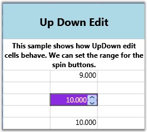

UpDownEdit cell type makes the grid cell to host an Up and Down edit control which contains a pair of arrow buttons that increase or decrease the cell value. The style properties applicable to this cell type are provided below.
Table 12: GridStyleInfo Property
|
GridStyleInfo Property |
Description |
|
Cell Type |
Set to “UpDownEdit” |
|
NumberGroupSeparator |
String that separates group of digits to the left of the decimal |
|
NumberDecimalDigits |
Number of digits that appear after the decimal |
|
MaxValue |
Upper limit in the range of applicable values |
|
MinValue |
Lower limit in the range of applicable values |
|
Step |
Unit value that is to be increased or decreased when the spin buttons are clicked |
|
FocusedBorderBrush |
Border brush; applied only when the cell is in focus |
|
FocusedForeground |
Foreground brush; applied only when the cell is in focus |
|
FocusedBackground |
Background brush; applied only when the cell is in focus |
Example
The code below sets up two different Up and Down controls in grid cells.
|
[C#]
var updownStyleInfo = this.grid.Model[6, 2]; updownStyleInfo.CellType = "UpDownEdit"; updownStyleInfo.NumberFormat = new NumberFormatInfo { NumberGroupSeparator = " ", NumberDecimalDigits = 3 }; updownStyleInfo.UpDownEdit.FocusedBackground = Brushes.Tan; updownStyleInfo.UpDownEdit.FocusedBorderBrush = Brushes.Red; updownStyleInfo.UpDownEdit.FocusedForeground = Brushes.Yellow; updownStyleInfo.UpDownEdit.MaxValue = 10.00; updownStyleInfo.UpDownEdit.MinValue = 0; updownStyleInfo.CellValue = 10.000;
var updownStyleInfo1 = this.grid.Model[8 , 2]; updownStyleInfo1.CellType = "UpDownEdit"; updownStyleInfo1.NumberFormat = new NumberFormatInfo { NumberGroupSeparator = " ", NumberDecimalDigits = 3 }; updownStyleInfo1.UpDownEdit.FocusedBackground = Brushes.BlueViolet ; updownStyleInfo1.UpDownEdit.FocusedBorderBrush = Brushes.Red; updownStyleInfo1.UpDownEdit.FocusedForeground = Brushes.Bisque ; updownStyleInfo1.UpDownEdit.MaxValue = 100.00; updownStyleInfo1.UpDownEdit.MinValue = 0; updownStyleInfo1.CellValue = 10.000; |
Output
The following output is generated using the code above.

Figure 34: Up Down Edit
 Note: For complete code, please refer to the
following browser sample.
Note: For complete code, please refer to the
following browser sample.
...\My Documents\Syncfusion\EssentialStudio\<Version Number>\WPF\Grid.WPF\Samples\3.5\WindowsSamples\Cell Types\UpDown Cell Demo